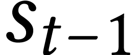
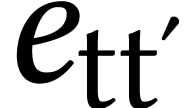
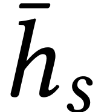
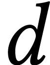
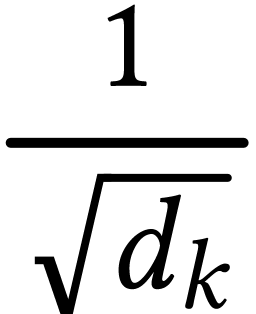
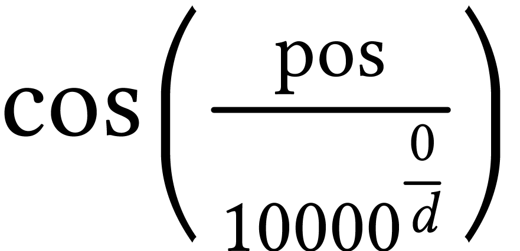

[main]Feel the Water
[main]Feel the Water
[main]Feel the Water
This article discusses the attention mechanisms both as an improvement to the encoder-decoder RNN models, and as a fundamental component to the Transformer architecture. It serves as a record of my learning process and a reference for the future use.
Sections:
Machine translation can be viewed as constructing conditional language models that generate the most probable output in a target language for a given input in the other source language. To express this in a mathematical way:

Here, x and y denote the input and output sequence respectively, while
superscripts in angle brackets ( )
indicate the position of each word within the sequence. Traditionally, a
method called statistical machine translation (SMT) was
the dominant approach (as used in early versions of Google Translate).
NMT models are trained on large amount of parallel corpora,
and analyzes these corpora to identify statistical relationships between
words, phrases, and sentence structures in different languages.
)
indicate the position of each word within the sequence. Traditionally, a
method called statistical machine translation (SMT) was
the dominant approach (as used in early versions of Google Translate).
NMT models are trained on large amount of parallel corpora,
and analyzes these corpora to identify statistical relationships between
words, phrases, and sentence structures in different languages.
During the 2010s, another method called neural machine translation (NMT) rapidly gained popularity following the successful application of RNN models to translation tasks. A 2014 paper demonstrated how long-short-term memory (LSTM) cells could be employed to address sequence-to-sequence problems. The idea is to use an encoder LSTM to read the input sequence, generating a fixed-dimensional vector representation, which was then decoded by a second LSTM to produce the corresponding output sequence.
To better understand this neural network architecture, we will build an encoder–decoder network to solve a relatively simple task: converting human-readable date strings into the ISO date format. And here are some task samples:

The figure below describes our intended architecture:
The left-side LSTM is the encoder. To better capture information from the input sequences, we use a bidirectional RNN for this component. The encoder's hidden and cell states form the vector representation of input sequence, and they are then passed to the decoder as its initial state. The ISO-formatted dates are also used as inputs to the decoder during training, but shifted back by one step. In other words, during training the decoder is given as input the character that it should have output at the previous step, regardless of what it actually output. This is called teacher forcing—a technique that improves the model's performance. The decoder returns all cells' output sequences instead of states from the last cell. It then passes its output to a dense layer which uses softmax as the activation function, to get probabilities of each output character. We will now build this network step by step (the complete implementation can be found here).
First we need to prepare the training dataset. The faker is used here to generate some random dates, which are then formatted in random formats:
def load_date():
dt = fake.date_object()
try:
human_readable = format_date(dt, format=random.choice(FORMATS), locale='en_US')
human_readable = human_readable.lower()
human_readable = human_readable.replace(',','')
machine_readable = dt.isoformat()
except AttributeError as e:
return None, None, None
return human_readable, machine_readable, dt
The size of our training dataset is 100,000:
def load_dataset(m):
dataset = []
for i in tqdm(range(m)):
h, m, _ = load_date()
if h is not None:
dataset.append((h, m))
return dataset
m = 100000
dataset = load_dataset(m)
dataset[:5]
=>
[('saturday june 29 1996', '1996-06-29'), ('15 march 1978', '1978-03-15'), ('thursday december 28 2023', '2023-12-28'), ('wednesday december 31 1980', '1980-12-31'), ('apr 5 1995', '1995-04-05')]
The next step is to vectorize all the texts in the dataset. Since we are translating date strings, we will use character-level vectorization rather than word-level vectorization (as commonly used in NLP):
import tensorflow as tf
vocab_size = 50
Tx = 30
Ty = 12
sos = '@'
eos = '$'
def custom_standardization(input_string):
# Lowercase and remove punctuation except '-'
lowercase = tf.strings.lower(input_string)
# Remove all punctuation except '-'
return tf.strings.regex_replace(lowercase, r"[^\w\s-@$]", "")
dates_human = [d[0] for d in dataset]
dates_machine = [d[1] for d in dataset]
vec_layer_human = tf.keras.layers.TextVectorization(
vocab_size, output_sequence_length=Tx, split="character", name="vec_h",
standardize=custom_standardization)
vec_layer_machine = tf.keras.layers.TextVectorization(
vocab_size, output_sequence_length=Ty, split="character", name="vec_m",
standardize=custom_standardization)
vec_layer_human.adapt(dates_human)
vec_layer_machine.adapt([f"{sos}{s}{eos}" for s in dates_machine])
print(vec_layer_human.get_vocabulary()[:15])
print(vec_layer_machine.get_vocabulary())
=>
['', '[UNK]', ' ', '1', '2', 'a', '0', '9', 'e', 'r', 'y', 'u', 'd', 's', 'n'] ['', '[UNK]', '-', '0', '1', '2', '@', '$', '9', '7', '8', '3', '4', '5', '6']
The empty string (“”) and
Next we split the whole dataset into training, validation and test sets:
train_size = 60000
valid_size = 20000
X_train = tf.constant(dates_human[:train_size])
X_valid = tf.constant(dates_human[train_size:train_size+valid_size])
X_test = tf.constant(dates_human[train_size+valid_size:])
X_train_dec = tf.constant([f"{sos}{s}" for s in dates_machine[:train_size]])
X_valid_dec = tf.constant(
[f"{sos}{s}" for s in dates_machine[train_size:train_size+valid_size]])
X_test_dec = tf.constant([f"{sos}{s}" for s in dates_machine[train_size+valid_size:]])
Y_train = vec_layer_machine([f"{s}{eos}" for s in dates_machine[:train_size]])
Y_valid = vec_layer_machine(
[f"{s}{eos}" for s in dates_machine[train_size:train_size+valid_size]])
Y_test = vec_layer_machine([f"{s}{eos}" for s in dates_machine[train_size+valid_size:]])
And we can construct our model now:
encoder_inputs = tf.keras.layers.Input(name="encoder_inputs", shape=[], dtype=tf.string)
decoder_inputs = tf.keras.layers.Input(name="decoder_inputs",shape=[], dtype=tf.string)
encoder_input_ids = tf.cast(
tf.expand_dims(vec_layer_human(encoder_inputs), axis=-1),
dtype=tf.float32)
decoder_input_ids = tf.cast(
tf.expand_dims(vec_layer_machine(decoder_inputs), axis=-1),
dtype=tf.float32)
encoder = tf.keras.layers.Bidirectional(tf.keras.layers.LSTM(256, return_state=True), name="encoder")
encoder_outputs, *encoder_states = encoder(encoder_input_ids)
encoder_states = [tf.concat(encoder_states[::2], axis=-1), # hidden states (0 & 2)
tf.concat(encoder_states[1::2], axis=-1)] # cell states (1 & 3)
decoder = tf.keras.layers.LSTM(512, name="decoder", return_sequences=True)
decoder_outputs = decoder(decoder_input_ids, initial_state=encoder_states)
output_layer = tf.keras.layers.Dense(vocab_size, name="dense", activation="softmax")
Y_proba = output_layer(decoder_outputs)
model = tf.keras.Model(inputs=[encoder_inputs, decoder_inputs],
outputs=[Y_proba])
model.compile(loss="sparse_categorical_crossentropy", optimizer="nadam",
metrics=["accuracy"])
We expand the dimensions of encoder_input_ids and decoder_input_ids because LSTM layers expect a input shape of (batch, timesteps, feature), but the outputs of our vectorization layers only have two dimensions. Another thing worth mentioning is how we compose the encoder_states. Since we use a bidirectional LSTM as the encoder, we get four states from it in total. The first two are hidden and cell states of the forward LSTM, and the last two are the corresponding states from the backward one. The hidden states are concatenated together, and the cell states are concatenated likewise, before being passed to the decoder. We can have a look at the model summary now:
model.summary(line_length=120, expand_nested=True)
=>
Model: "model"
________________________________________________________________________________________________________________________
Layer (type) Output Shape Param # Connected to
========================================================================================================================
encoder_inputs (InputLayer) [(None,)] 0 []
vec_h (TextVectorization) (None, 30) 0 ['encoder_inputs[0][0]']
decoder_inputs (InputLayer) [(None,)] 0 []
tf.expand_dims_2 (TFOpLambda) (None, 30, 1) 0 ['vec_h[1][0]']
vec_m (TextVectorization) (None, 12) 0 ['decoder_inputs[0][0]']
tf.cast (TFOpLambda) (None, 30, 1) 0 ['tf.expand_dims_2[0][0]']
tf.expand_dims_3 (TFOpLambda) (None, 12, 1) 0 ['vec_m[1][0]']
encoder (Bidirectional) [(None, 512), 528384 ['tf.cast[0][0]']
(None, 256),
(None, 256),
(None, 256),
(None, 256)]
tf.cast_1 (TFOpLambda) (None, 12, 1) 0 ['tf.expand_dims_3[0][0]']
tf.concat (TFOpLambda) (None, 512) 0 ['encoder[0][1]',
'encoder[0][3]']
tf.concat_1 (TFOpLambda) (None, 512) 0 ['encoder[0][2]',
'encoder[0][4]']
decoder (LSTM) (None, 12, 512) 1052672 ['tf.cast_1[0][0]',
'tf.concat[0][0]',
'tf.concat_1[0][0]']
dense (Dense) (None, 12, 50) 25650 ['decoder[0][0]']
========================================================================================================================
Total params: 1606706 (6.13 MB)
Trainable params: 1606706 (6.13 MB)
Non-trainable params: 0 (0.00 Byte)
It indeed has the same topology as we showed earlier in figure 1. The training process tasks around 2 minutes on my RTX 3060 card, and the evaluation gets a promising result:
model.fit((X_train, X_train_dec), Y_train, epochs=10,
validation_data=((X_valid, X_valid_dec), Y_valid))
print("Evaluate on test data")
results = model.evaluate((X_test, X_test_dec), Y_test)
print("test loss, test acc:", results)
=>
test loss, test acc: [0.0018235821044072509, 0.9993454813957214]
We can use our model to convert date formats finally, but it's not as
simple as calling
import numpy as np
def translate(hunman_date):
translation = ""
for t in range(Ty):
X = np.array([hunman_date]) # encoder input
X_dec = np.array([sos + translation]) # decoder input
y_proba = model.predict((X, X_dec), verbose=0)[0, t] # last token's probas
char_id = np.argmax(y_proba)
predicted_char = vec_layer_machine.get_vocabulary()[char_id]
if predicted_char == eos:
break
translation += predicted_char
return translation.strip()
We call the model in a loop because the decoder expects as input the character that was predicted at the previous time step. Let's see how our model performs:
for i in range(5):
human_date= format_date(fake.date_object(),format=random.choice(FORMATS),locale='en_US')
print("human: " + human_date)
print("machine: " + translate(human_date) + "\n")
=>
human: Friday, December 20, 2019 machine: 2019-12-20 human: 14.02.73 machine: 1973-02-14 human: Jan 10, 2025 machine: 2025-01-10 human: Friday, February 22, 1985 machine: 1985-02-22 human: Sunday, September 12, 1971 machine: 1971-09-12
Although this encoder-decoder network performs well on date translation tasks, it still has potential limitations when applied to more complex NLP domains. The encoder in this network is essentially compressing text into fixed-size mathematical representations, so intuitively, as input sentences become longer, the rate of information loss tends to increase, leading to less accurate translations. This limitation was the key issue that another influential 2014 paper sought to address.
The authors proposed an extension to the basic encoder-decoder model. The most distinguishing feature is that the new model doesn't attempt to encode the entire input text into a single fixed-length vector. Instead, it encodes the input into a sequence of vectors, and the decoder selectively chooses the most relevant ones based on the current word being generated. To get an intuition, take our date translation task as an example. When translating the date string of "Friday, December 20, 2019", if the decoder is currently generating the month part of "2019-12-20", it only needs to focus on December from the input, so the model assigns higher weights to the vector representation of December. This is what the attention mechanism means in the context of this new approach. Now let's delve into details of each part, and go through key mathematical expressions from the paper.
General Description
In the new model architecture, the probability equation for the output word at time step t is:

Here g is a non-linear activation function, and  is decoder's hidden state at t step,
which is further computed by
is decoder's hidden state at t step,
which is further computed by

 is previous step's hidden state, and  is a context vector depending on the encoder's hidden
states. Please note that, unlike the basic encoder-decoder approach,
each target word is conditioned on a distinct context, which is computed
as a weighted sum of hidden states from the encoder:
is a context vector depending on the encoder's hidden
states. Please note that, unlike the basic encoder-decoder approach,
each target word is conditioned on a distinct context, which is computed
as a weighted sum of hidden states from the encoder:

The weight  is computed by a softmax
function:
is computed by a softmax
function:

where

The parameter e is called energy and is obtained by
training a small alignment model that scores how well the input at
position  aligns with the output at position
.
aligns with the output at position
.
The probability , or its associated energy , reflects the importance of
encoder's hidden state  with respect to the
decoder's previous hidden state in determining
the next state and generating . Thus, information can be distributed
throughout the sequence of encoder hidden states and selectively
retrieved by the decoder. This is a brief graphical illustration from
the paper:
with respect to the
decoder's previous hidden state in determining
the next state and generating . Thus, information can be distributed
throughout the sequence of encoder hidden states and selectively
retrieved by the decoder. This is a brief graphical illustration from
the paper:
The plus sign in the middle represents the weighted-sum computation for the context vector. The bidirectional LSTM below and the forward LSTM above are the encoder and decoder respectively. Let's now go deeper into implementation details of this neural network.
The key part of this new model architecture is the attention computation, so let's implement it first:
from tensorflow.keras.layers import RepeatVector, Concatenate, Dense, Dot, Softmax
repeator = RepeatVector(Tx)
concatenator = Concatenate(axis=-1)
densor1 = Dense(10, activation = "tanh")
densor2 = Dense(1, activation = "relu")
activator = Softmax(axis=1, name="attention_weights")
dotor = Dot(axes = 1)
def one_step_attention(h, s_prev):
"""
Arguments:
h -- hidden state output of the Bi-LSTM, numpy-array of shape (m, Tx, n_h)
s_prev -- previous hidden state of the (decoder) LSTM, numpy-array of shape (m, n_s)
Returns:
context -- context vector, input of the next (decoder) LSTM cell
"""
s_prev = repeator(s_prev) # (m, Tx, n_s)
concat = concatenator([h, s_prev]) # (m, Tx, n_h + n_s)
energies = densor2(densor1(concat)) # (m, Tx, 1)
alphas = activator(energies) # (m, Tx, 1)
context = dotor([alphas, h]) # (m, 1, n_h)
return context
This function computes the attention context at decoder time step t. It takes two inputs: the complete sequence of encoder hidden states h and the decoder's previous hidden state s_prev.
The decoder state is repeated Tx times to match
the encoder sequence length, enabling computation of alignment scores
between and each encoder hidden state . We construct the alignment model
as a three-layer neural network: two dense layers followed by a softmax
activation layer.
The resulting attention weights (alphas) represent the probability distribution indicating how relevant each input word at position t' is for generating the current output word at position t. In essence, these weights quantify how much attention the decoder should pay to each encoder position when producing the current output token.
Finally, the attention weights are applied via dot product with the encoder hidden states to produce a context vector—a weighted combination of all encoder states that provides tailored information for generating each specific output word.
This is how our model looks like now:
from tensorflow.keras.layers import Input, Bidirectional, LSTM, Dense
n_h = 64
n_s = 128
def build_model():
encoder_inputs = Input(name="encoder_inputs", shape=[], dtype=tf.string)
encoder_input_ids = tf.cast(
tf.expand_dims(vec_layer_human(encoder_inputs), axis=-1),
dtype=tf.float32)
encoder = Bidirectional(LSTM(n_h, return_sequences=True), name="encoder")
encoder_outputs = encoder(encoder_input_ids)
s0 = Input(shape=(n_s,), name='s0')
c0 = Input(shape=(n_s,), name='c0')
s = s0
c = c0
decoder_LSTM_cell = LSTM(n_s, name="decoder", return_state = True)
output_layer = Dense(vocab_size, name="output", activation="softmax")
outputs = []
for t in range(Ty):
context = one_step_attention(encoder_outputs, s)
_, s, c = decoder_LSTM_cell(inputs=context, initial_state=[s, c])
out = output_layer(s)
outputs.append(out)
# Stack outputs to create a single tensor of shape (batch_size, Ty, vocab_size)
outputs = tf.stack(outputs, axis=1)
model = tf.keras.Model(inputs=[encoder_inputs, s0, c0], outputs=outputs)
model.compile(loss="sparse_categorical_crossentropy", optimizer="nadam",
metrics=["accuracy"])
model.summary(line_length=120, expand_nested=True)
return model
This model differs from the previous architecture in two key aspects:
Instead of returning only the final hidden state, the encoder now outputs the complete sequence of hidden states from all time steps. These outputs are essential parts for computing attention weights later.
The decoder now implements a manual recurrent structure rather than using a standard LSTM layer. At each time step, the decoder cell receives two inputs: the attention-weighted context vector (computed by the one_step_attention function) and the hidden/cell states from the previous time step. The cell then passes its updated hidden and cell states to the next time step. The outputs from all decoder time steps are collected and stacked to form the final model output.
The training and prediction procedures remain unchanged from the previous implementation. However, we add a new visualization function to analyze the learned attention patterns for test samples.:
import matplotlib.pyplot as plt
def plot_attention_map(modelx, text):
layer = modelx.get_layer('attention_weights')
f = tf.keras.Model(modelx.inputs, [layer.get_output_at(t) for t in range(Ty)])
s = np.zeros((1, n_s))
c = np.zeros((1, n_s))
X = np.array([text])
attention_weights = f.predict([X, s, c])
attention_map = np.zeros((Ty, Tx))
for t in range(Ty):
for t_prime in range(Tx):
attention_map[t][t_prime] = attention_weights[t][0, t_prime, 0]
# Normalize attention map
row_max = attention_map.max(axis=1)
attention_map = attention_map / row_max[:, None]
prediction = modelx.predict([X, s, c], verbose=0)
predicted_text = []
for i in range(len(prediction[0])):
char_id = np.argmax(prediction[0, i])
predicted_char = vec_layer_machine.get_vocabulary()[char_id]
predicted_text.append(predicted_char)
text_ = list(text)
input_length = len(text)
output_length = Ty
# Plot the attention_map
plt.clf()
f = plt.figure(figsize=(8, 8.5))
ax = f.add_subplot(1, 1, 1)
# add image
i = ax.imshow(attention_map, interpolation='nearest', cmap='Blues')
# add colorbar
cbaxes = f.add_axes([0.2, 0, 0.6, 0.03])
cbar = f.colorbar(i, cax=cbaxes, orientation='horizontal')
cbar.ax.set_xlabel('Alpha value (Probability output of the "softmax")', labelpad=2)
# add labels
ax.set_yticks(range(output_length))
ax.set_yticklabels(predicted_text[:output_length])
ax.set_xticks(range(input_length))
ax.set_xticklabels(text_[:input_length], rotation=45)
ax.set_xlabel('Input Sequence')
ax.set_ylabel('Output Sequence')
# add grid and legend
ax.grid()
return attention_map
We extract the attention_weights layer from the trained model and use it to obtain the attention weights during prediction. These weights are then visualized as heat maps, where each cell represents the attention score between a specific input position and output position. This visualization reveals which parts of the input sequence the model focuses on when generating each word in the output, providing interpretability into the model's decision-making process. Let's try it now:
plot_attention_map(model, "Monday, February 23, 1998")
=>
The complete code of this section can be found here.
The attention mechanism we've implemented is sometimes called additive attention (due to the concatenation of the encoder output with the decoder's previous hidden state) or Bahdanau-style attention (named after the 2014 paper's first author). Another common attention mechanism, known as dot-product attention or Luong-style attention, was proposed shortly after, in a 2015 paper.
Compared to Bahdanau-style attention, the key difference is that, instead of using the decoder's hidden state from the previous time step (t-1), Luong attention uses the decoder's current hidden state at step t to: (a) compute the attention weights alongside the encoder's hidden states, and (b) be combined with the resulting context vector to produce an attentional hidden state . The attentional hidden state is then fed to an activation layer for the final prediction. There can be illustrated in a figure from their paper:
The  in the figure denotes the attention weights
( in our previous example). These weights are
computed by applying a probability distribution to the attention scores
(or energies in our example), following the same process described
earlier:
in the figure denotes the attention weights
( in our previous example). These weights are
computed by applying a probability distribution to the attention scores
(or energies in our example), following the same process described
earlier:
But how these scores are computed is different. There are three alternative ways proposed in the paper:

The dot and general equations are two dot-product variants, and the third one is the same calculation used for Bahdanau-style attention. When the authors compared both dot-product approaches against the concatenate attention mechanism, they found that the dot-product variants achieved better performance. For this reason, dot-product attention is more popular nowadays.
Keras provides an Attention layer for dot-product attention, we can add it to the basic encoder-decoder network with some other slight modifications to implement the Luong-style attention.
We first need to also set return_sequences=True for the encoder:
encoder = tf.keras.layers.Bidirectional(
tf.keras.layers.LSTM(256, return_sequences=True, return_state=True), name="encoder")
And then, we create the attention layer and pass it the decoder's states and the encoder's outputs. Lastly, we pass the attention layer's outputs directly to an activation layer, to get the final prediction:
attention_layer = tf.keras.layers.Attention() attention_outputs = attention_layer([decoder_outputs, encoder_outputs]) output_layer = tf.keras.layers.Dense(vocab_size, name="dense", activation="softmax") Y_proba = output_layer(attention_outputs)
We can map our code to the components in Figure 4. The decoder_outputs
and encoder_outputs correspond to 
and respectively, tf.keras.layers.Attention()
implements the Attention layer, and attention_outputs
represents  from the figure.
from the figure.
An interesting interpretation of the attention mechanism is to think of it as a learnable database system. For example, let's say the encoder has processed the date string “Monday, February 23, 1998”, and manages to understand that the semantics of this input is:
{
"weekday": "Monday",
"month": "February",
"day": "23",
"year": "1998"
}
So it encodes this information in its vector output. Now suppose the
decoder has already generated the year part of “1998-02-23”
and determines that the month comes next. So it needs to retrieve the
month value from the encoder's output—just like a database query
or a dictionary lookup: encoded_vector["month"].
In our earlier examples, the decoder's hidden states (either or ) serve as
queries to retrieve relevant information from the encoder's
outputs. And the attention layer can be considered as a trained database
that learns to return the right values for a given query, based
on the training examples. The “lookup” process works by
first computing similarity scores between the decoder's and encoder's
hidden states, and then using those scores to weight and extract the
most relevant parts of the encoder's outputs. That's why, in the Keras
Attention layer documentation, the call arguments are named
query, value and key (key is usually the same with value).
A special use case of the attention mechanism is when the same tensor is used as both the query and the value—this is called self-attention. Self-attention is one of the core ideas behind our next topic: the Transformer architecture.
The model architectures we've discussed so far are all built on recurrent neural network, specifically LSTM cells. The term recurrent refers to the fact that the same neural cell is applied repeatedly across the sequence: at each step it takes in the hidden state from the previous step, updates it with the current input, and produces a new hidden state for the next step. This process continues until the entire sequence has been processed. It's very much like calling a recursive function, with each call frame depending on the return value from the inner frame, until the argument eventually reduces to its base case. This inherently sequential nature of RNN prevents parallelization within a single training example, resulting in a time complexity of with respect to the sequence length T. As T grows, training time increases linearly, while memory constraints also further restrict the batching degree across training examples.
To overcome these limitations, a team of Google researchers introduced the Transformer architecture in their 2017 paper “Attention Is All You Need”, which removes recurrence entirely and instead relies exclusively on attention mechanisms to capture global dependencies between inputs and outputs. This design increases the potential for parallelization, allowing the training process to scale more efficiently. It also enables the model to capture long-range dependencies more effectively than recurrent architectures. The transformer architecture is presented below in the figure from their paper.
This architecture is composed of an encoder (on the left) and a decoder (on the right) as well. The encoder consists of N identical layers (with N = 6 in the original paper), which we will refer to as encoder layers. Each encoder layer is further divided into two sub-layers: the first is a multi-head self-attention mechanism (more details later), and the second is a fully connected feed-forward network. Each sub-layer is wrapped with a residual connection from its input and followed by layer normalization. These two parts are combined as “Add & Norm” in the figure because they can be mathematically expressed as:
These “Add & Norm” operations help stabilize training by preventing vanishing gradients and maintaining optimization efficiency throughout the network.
The structure of the decoder is almost the same, with two key differences:
A look-ahead mask is applied to the decoder's self-attention layer. Since the entire target sequence (the label outputs) is fed into the decoder at once during training, future positions beyond the current step would otherwise be visible. To prevent the model from “cheating” by accessing those future tokens, the mask blocks attention to positions after the current step.
The decoder includes an additional third sub-layer between the self-attention and feed-forward components. This intermediate layer performs multi-head cross-attention over the encoder stack's output, enabling the decoder to attend to relevant parts of the input sequence during generation.
Positional encoding layers sit between the embedding layers and the encoder/decoder stacks, injecting positional information into the embedding vectors. Unlike RNNs, which inherently capture word order through sequential processing, the Transformer processes the entire input sequence in parallel, making explicit positional encoding essential for the model to understand sequence order. The positional encodings have the same dimension as the embeddings, so the two can be added together. The paper defines these encodings using the following formulas:
is the position of the word.
 is the dimension of the word embedding.
where is the index of the word embedding.
The positional values of even and odd indices are computed by sine and cosine functions respectively, but the angle for each i is identical. When implementing the positional encoding later, we'll observe some interesting properties that help explain why it is defined in this particular way.
The authors refer to their attention mechanism as Scaled Dot-Product Attention. It's quite similar to the dot-product attention we discussed in the previous section, with one key difference: the dot-product results are scaled down before being passed to the softmax function:
Q, K and V are matrices representing queries, keys and values.
In self-attentions, Q, K, and V are all the same output of the previous encoder (or decoder) layer.
In cross-attentions, Q comes from the previous decoder layer, K and V come from the output of the encoder.
The the dot-product result is scaled by . Without this scaling, large dot-product values push the softmax function into saturation regions where gradients become extremely small, hindering the learning progress.
The term multi-head refers to computing not just one, but parallel attentions (or head). Instead of applying attention directly to the full-dimensional queries, keys, and values, each head uses its own learned linear projections of Q, K, and V. The outputs from all heads are then concatenated and passed through a final linear layer to produce the result, as illustrated in the figure below.
We can think of multi-head attentions as applying the attention mechanisms several times to detect different features. We will next implement all the key components, and connect them together to form the whole Transformer network.
Let's first work on the positional encodings. The table below shows intuitively the resulting encoding matrix we want for each input sequence:
|
k = 0 |
k = 1 |
... |
k = d - 2 |
k = d - 1 |
encoding(0) |
|
|
|
|
|
encoding(1) |
|
|
|
|
|
... |
|
|
|
|
|
encoding(pos) |
|
 |
|
|
|
The functions below calculate the positional encoding matrix:
def get_angles(pos, k, d):
"""
Arguments:
pos -- column vector [[0], [1], …,[N-1]]
k -- row vector [[0, 1, 2, …, d-1]]
d -- int, size of the embedding dimension
Returns:
angles -- (pos, d) matrix
"""
i = k // 2
angles = pos / (10000 ** (2 * i / d))
return angles
def positional_encoding(positions, d):
"""
Arguments:
positions -- int, number of positions to be encoded
d -- int, size of embedding dimension
Returns:
pos_encoding -- (1, pos, d) A matrix with the positional encodings
"""
angles = get_angles(np.arange(positions)[:, np.newaxis],
np.arange(d)[np.newaxis, :],
d)
# apply sin to even indices: 2i
angles[:, 0::2] = np.sin(angles[:, 0::2])
# apply cos to odd indices: 2i+1
angles[:, 1::2] = np.cos(angles[:, 1::2])
pos_encoding = angles[np.newaxis, …]
return tf.cast(pos_encoding, dtype=tf.float32)
The helper function get_angles assumes that pos
is a column vector and k is a row vector. When the
division operator is applied, broadcasting first expands k
across each row of pos. Then, each scalar element of pos is broadcast across the replicated rows of k,
producing the matrix structure shown above. The
positional_function accepts two integer inputs: the number
of positions and the size of the embedding dimension. It uses
np.newaxis to reshape pos and k
into column and row vectors before passing them to
get_angles. The function then applies sine to
even-indexed columns and cosine to odd-indexed columns.
Finally, it expands the matrix dimensions at axis 0 to match the
expected shape of (1, pos, d). This allows the
positional encodings to be broadcast across all training examples later.
Now we can visulize our positional encodings:
pos_encoding = positional_encoding(50, 512)
print (pos_encoding.shape)
plt.pcolormesh(pos_encoding[0], cmap='RdBu')
plt.xlabel('d')
plt.xlim((0, 512))
plt.ylabel('Position')
plt.colorbar()
plt.show()
=>
(1,50,512)
Each row represents the positional encoding for the word at that specific position. From the visualization we can see that every row has a distinct color pattern, indicating that no two rows share identical encoding values. This property enables the positional encoding to preserve information about the absolute position of each word within the sequence.
Another interesting property is that the norm of the difference between two positional vectors separated by k positions remains constant. In other words, if we keep k fixed and change pos, the difference stays approximately the same. This shows that the encoding depends only on relative distances, which helps the model capture the relative positions of words.
pos1 = 42 pos2 = 77 k = 2 print(tf.norm(pos_encoding[0,pos1,:] - pos_encoding[0,pos1 + k,:])) print(tf.norm(pos_encoding[0,pos2,:] - pos_encoding[0,pos2 + k,:]))
=>
tf.Tensor(3.2668781, shape=(), dtype=float32) tf.Tensor(3.2668781, shape=(), dtype=float32)
We next implement two types of useful masks when building the Transformer archetecture.